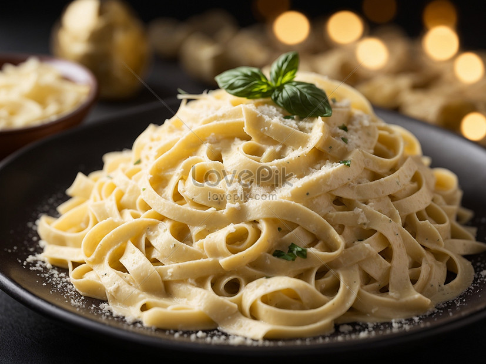
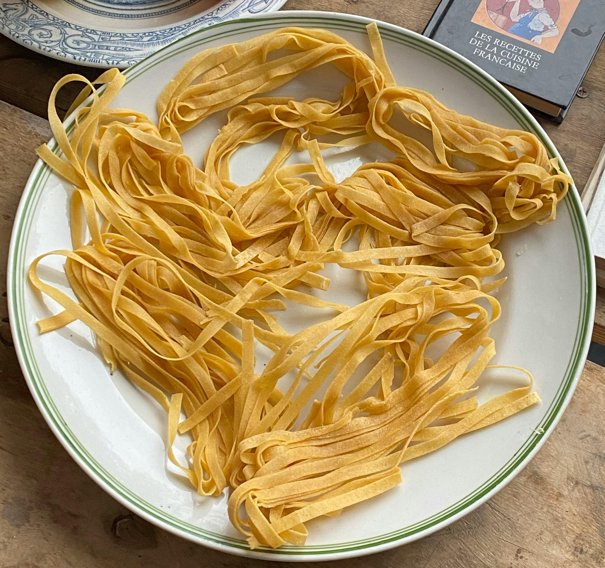
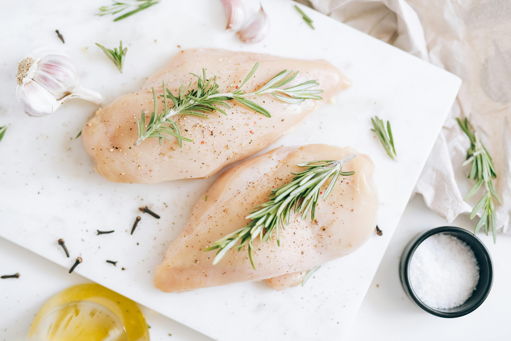
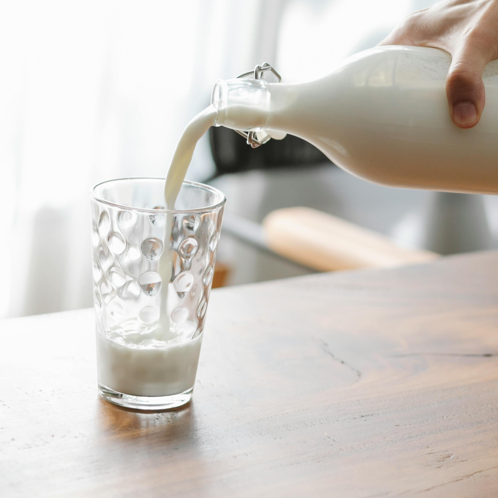
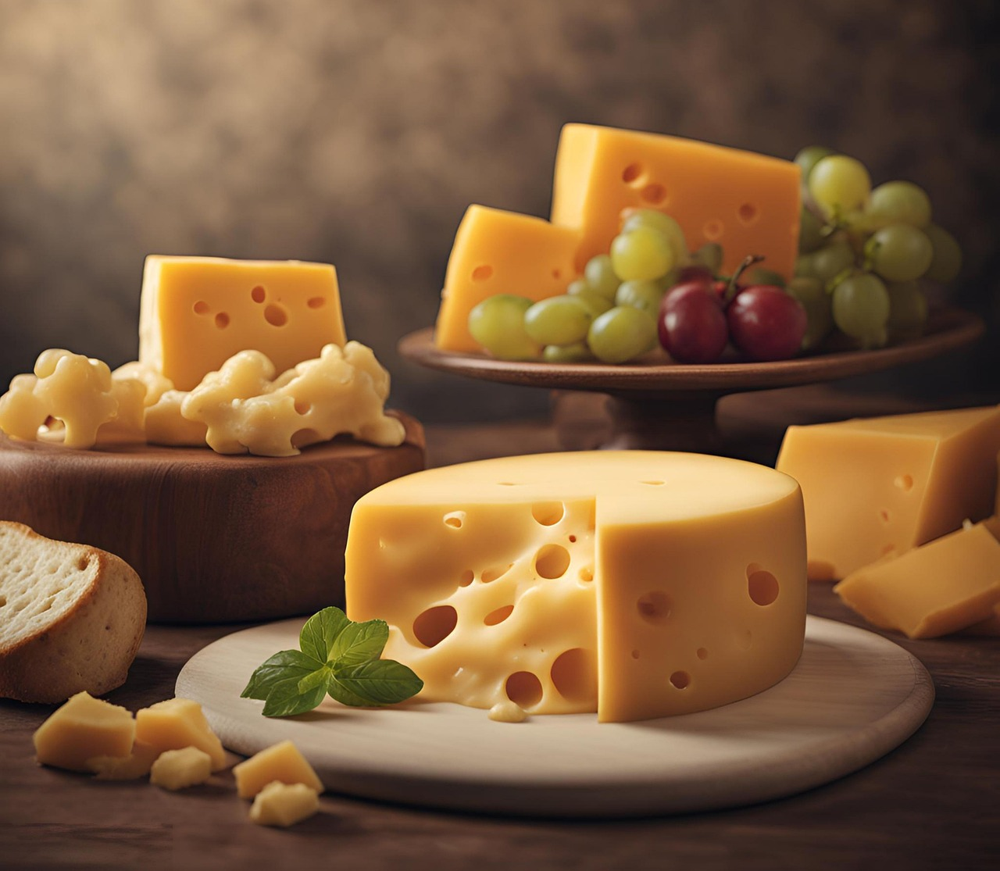
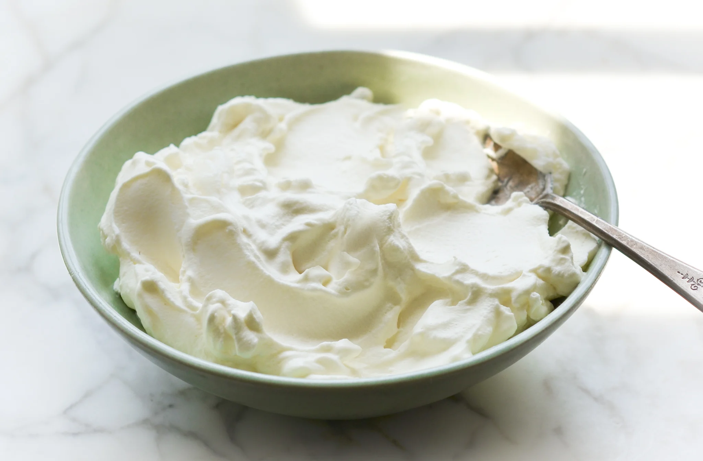
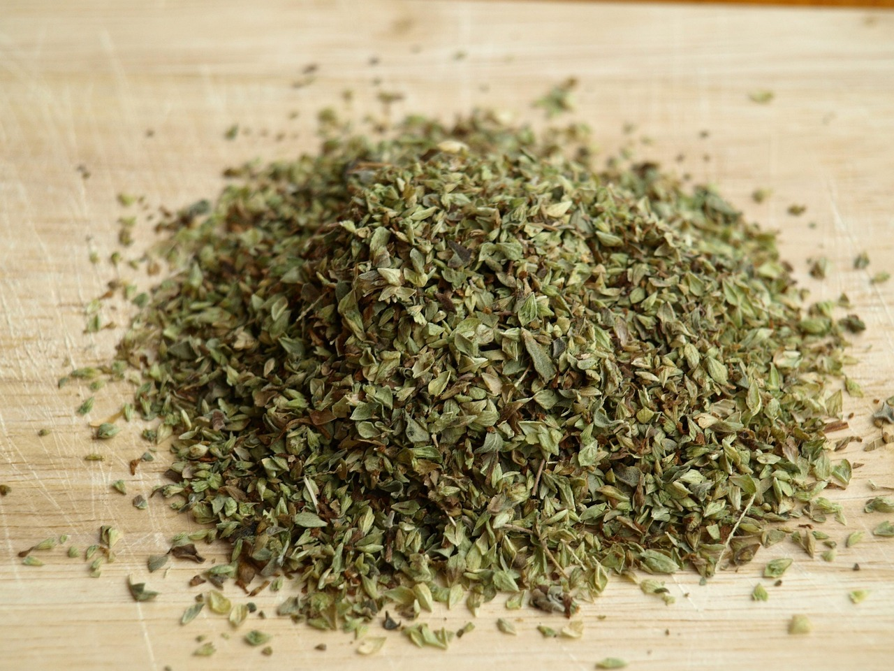
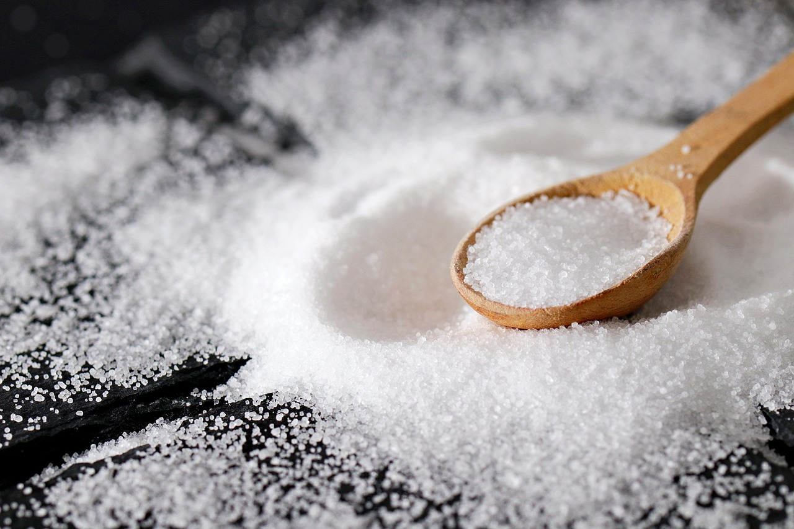
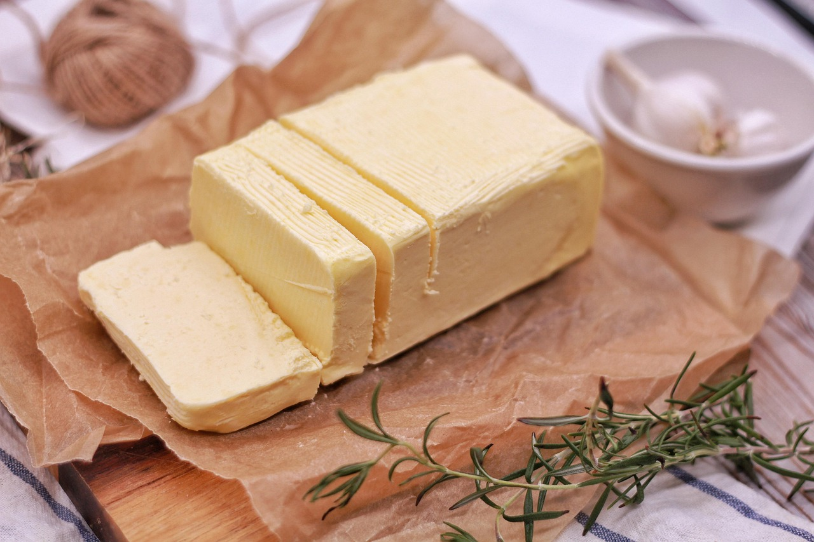
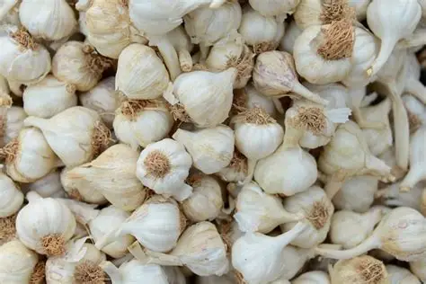

High Quality Pictures Recipe
ALFREDO PASTA

Ingredients
- Pasta

- Chicken

- Milk

- Cheese

- Cream

- Oregano

- Black Pepper

- Salt

- Butter

- Garlic

How To Cook?
- Boil the pasta in salted water until al dente. Drain and set aside.
- In a large skillet, melt the butter over medium heat. Add the minced garlic and sauté until fragrant.
- Add the chicken pieces to the skillet and cook until they are no longer pink in the center. Remove the chicken from the skillet and set aside.
- In the same skillet, pour in the milk and bring it to a gentle simmer. Stir in the cream and let it cook for a few minutes.
- Add the grated cheese to the skillet and stir until it melts and forms a creamy sauce.
- Season the sauce with oregano, black pepper, and salt to taste.
- Return the cooked chicken to the skillet and mix it into the sauce.
- Add the cooked pasta to the skillet and toss everything together until well combined and heated through.
- Serve hot, garnished with additional cheese or herbs if desired.